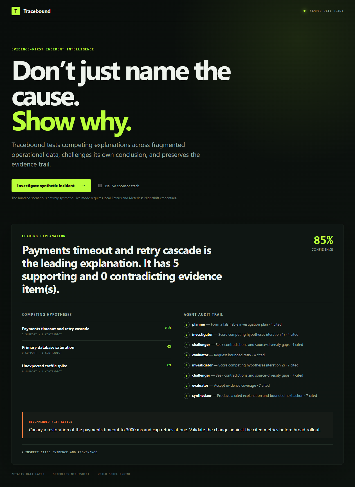

Tracebound
Do not just name the cause.
Show why.
An evidence-first incident agent that tests competing explanations, preserves provenance, and recommends a reversible next step.
Symptoms arrive fast. Proof does not.
A dashboard can show that checkout errors rose.
It cannot prove whether the cause was a deploy, traffic spike, database saturation, or a downstream dependency.
A plausible summary is not enough when omitted evidence changes the response.
One answer stays inspectable.
Payments timeout and retry cascade
deterministic sample confidence
5 supporting records
0 contradicting records
Reversible action:
Canary the previous 3,000 ms timeout and cap retries at one.

The first pass is not the final answer.
Tracebound widens evidence once, then stops. The loop is bounded by design.
Planner
Falsifiable plan
Investigator
Score evidence
Challenger
Find gaps
Evaluator
Accept or retry
Synthesizer
Cited answer
Maximum two passes
No unbounded reflection loop
Support and contradiction separate the cause.
Deploy changed timeout + retries
3,000 → 1,500 ms · 1 → 3 retries
Latency crossed the new timeout
Payments p95 reached 2,100 ms
Retries rose 3.1x; traffic stayed flat
Traffic ruled out as the trigger
Unexpected traffic spike
Request volume stayed flat.
Primary database saturation
Utilization remained normal at 62%.
The best explanation must survive alternatives, not merely sound plausible.
Sponsor technology sits on the decision path.
Each boundary is explicit, observable, and fail-closed.
Zetaris
Retrieves governed evidence through bounded REST SQL.
World Model Engine
Validates, deduplicates, ranks, and explains context selection.
Meterless Nightshift
Runs each live reasoning stage through its OpenAI-compatible runtime.
NVIDIA route
Records the model actually returned; Nemotron is never assumed.
Implemented
Adapters + hermetic tests
Pending
Live end-to-end account verification
If a provider fails, live mode stops. Sample output is never substituted silently.
Reproducible software, not a mock-up.
Local checks verify the product path. They do not claim live sponsor calls.
passing automated tests
synthetic incident cases
maximum investigation passes
production dependency vulnerabilities
TypeScript build + typecheck
Browser UI + public MIT repo
Docker build + API smoke test
Stable IDs + append-only JSONL trace
Evidence is visible. Hidden reasoning stays private.
Provenance
Stable content-derived IDs and source locators keep every claim traceable.
Falsifiability
Every hypothesis can receive supporting and contradicting evidence.
Bounded reflection
One broader retry improves coverage without creating an unbounded loop.
Operational safety
The recommendation is reversible. Tracebound never executes remediation.
If you cannot inspect why,
do not act.
Tracebound turns a plausible explanation into a testable decision record.
Link every claim to evidence and provenance.
Test competing causes before accepting an answer.
Recommend the smallest reversible next step.
Next: verify a non-secret live sponsor run, then extend governed connectors.